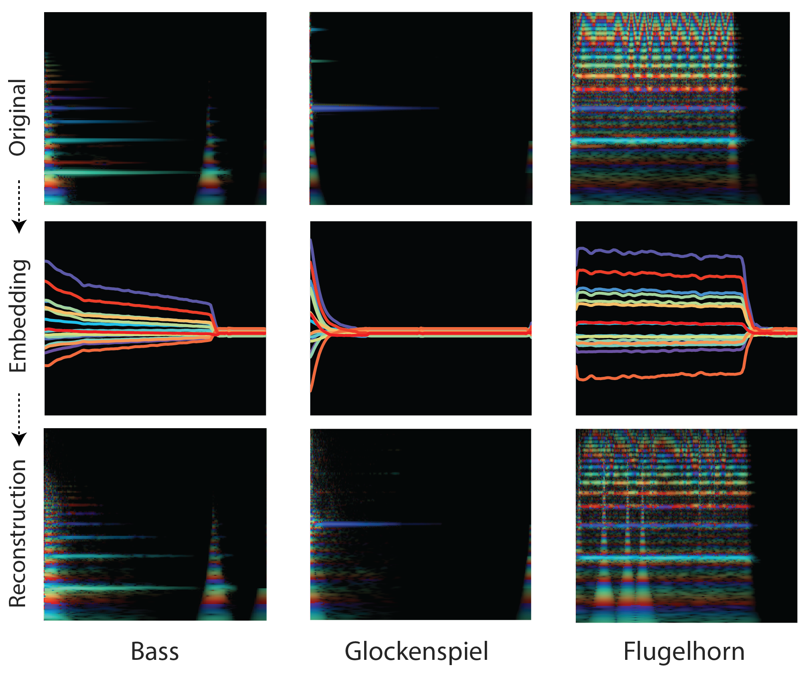

2017
AlphaGo Zero
Poker
MORE GAN
Wasserstein GAN
BEGAN
Bayesian GAN
CycleGAN
Wavenet

Real Time Stratergy
StarCraft II Learning Environment
DOTA
Interpretable
AI
Neuromorphic Computing
Special Mention Papers
DARLA: Improving Zero-Shot Transfer in Reinforcement Learning
SVAE: Structured Variational Autoencoders
FeUdal Networks for Hierarchical Reinforcement Learning